يتم الضغط على زر الإعدادات (⚙) في الريموت مرة واحدة لتظهر اللوحة السريعة على يمين الشاشة، أو الضغط مع الاستمرار للدخول لكل الإعدادات. اضغط على أي رقم في الصورة لمعرفة وظيفة الأيقونة وما يُقال للعميل.
اقرأ للعميل
«ممكن حضرتك تضغط على زر الإعدادات في الريموت — شكل ترس — هتظهر لوحة إعدادات سريعة، وهوجّه حضرتك خطوة بخطوة.»
خريطة اللوحة — اضغط على أي علامة
١١ عنصر معلّم على الصورة. الضغط على العلامة يعرض تفاصيلها أسفل الصورة.
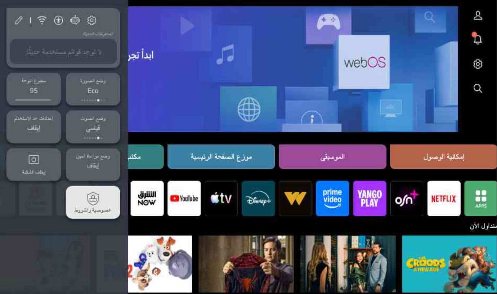
كل عناصر اللوحة السريعة
اقرأ للعميل
{{ selPanelItem.script }}
{{ selPanelItem.n }}
{{ selPanelItem.title }}
شكل الزر على الشاشة
{{ panelCrop }}
هذا هو الزر كما يظهر للعميل على الشاشة — وجّهه للوصول إليه بالريموت ثم الضغط عليه.
وظيفة العنصر
{{ selPanelItem.what }}
متى يستخدمه موظف خدمة العملاء
{{ selPanelItem.when }}
قائمة كل الإعدادات — بعد الضغط على زر الترس
بالضغط على زر الترس تظهر القائمة الكاملة على شكل ٤ أقسام رئيسية. اضغط على أي علامة لمعرفة محتوى القسم وما يُقال للعميل.
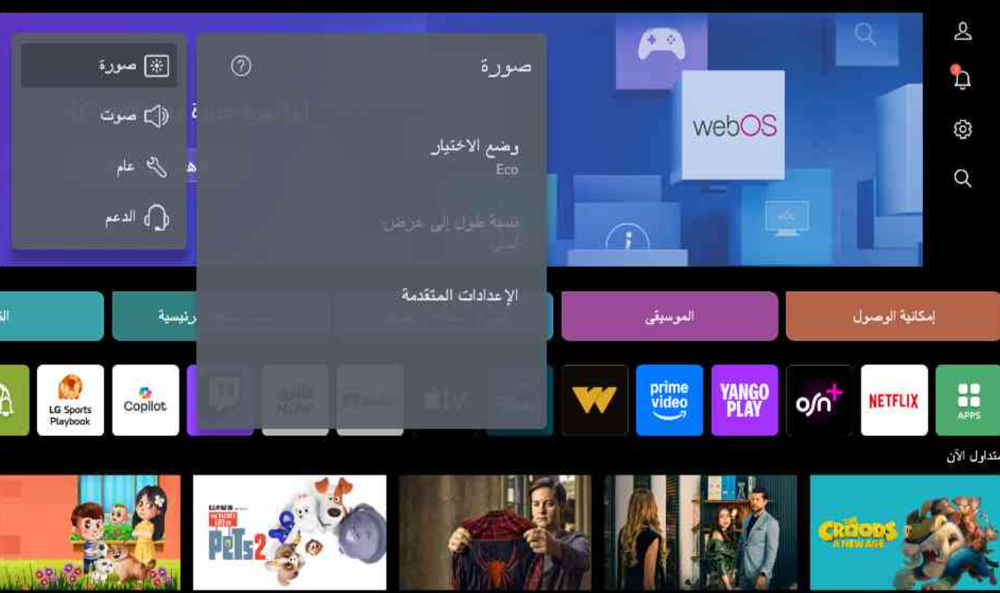
اقرأ للعميل
{{ selMenuItem.script }}
{{ selMenuItem.n }}
{{ selMenuItem.title }}
شكل الزر على الشاشة
{{ menuCrop }}
هذا هو الزر كما يظهر للعميل على الشاشة — وجّهه للوصول إليه بالريموت ثم الضغط عليه.
وظيفة العنصر
{{ selMenuItem.what }}
متى يستخدمه موظف خدمة العملاء
{{ selMenuItem.when }}
قائمة وضع الاختيار — أوضاع الصورة
بعد اختيار «وضع الاختيار» تظهر كل أوضاع الصورة المتاحة، والنقطة الخضراء توضح الوضع المختار حاليًا. اضغط على أي علامة لمعرفة الوضع ومتى يُستخدم.
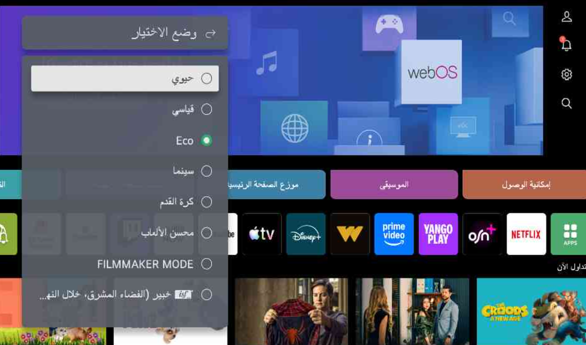
كل أوضاع الصورة
اقرأ للعميل
{{ selModeItem.script }}
{{ selModeItem.n }}
{{ selModeItem.title }}
شكل الزر على الشاشة
{{ modeCrop }}
هذا هو الزر كما يظهر للعميل على الشاشة — وجّهه للوصول إليه بالريموت ثم الضغط عليه.
وظيفة العنصر
{{ selModeItem.what }}
متى يستخدمه موظف خدمة العملاء
{{ selModeItem.when }}
قائمة الإعدادات المتقدمة — الضبط الدقيق للصورة
من داخل قسم الصورة نختار «الإعدادات المتقدمة» لضبط السطوع واللون والوضوح، وتطبيق الإعدادات على كل المدخلات. اضغط على أي علامة لمعرفة وظيفتها وما يُقال للعميل.
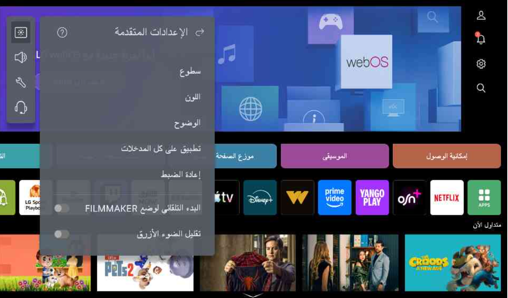
كل عناصر الإعدادات المتقدمة
اقرأ للعميل
{{ selAdvItem.script }}
{{ selAdvItem.n }}
{{ selAdvItem.title }}
شكل الزر على الشاشة
{{ advCrop }}
هذا هو الزر كما يظهر للعميل على الشاشة — وجّهه للوصول إليه بالريموت ثم الضغط عليه.
وظيفة العنصر
{{ selAdvItem.what }}
متى يستخدمه موظف خدمة العملاء
{{ selAdvItem.when }}
قسم الصوت — وضع الصوت ومخرج الصوت
من قائمة الإعدادات نختار قسم «صوت» لضبط وضع الصوت ومخرج الصوت. اضغط على أي علامة لمعرفة وظيفتها وما يُقال للعميل.
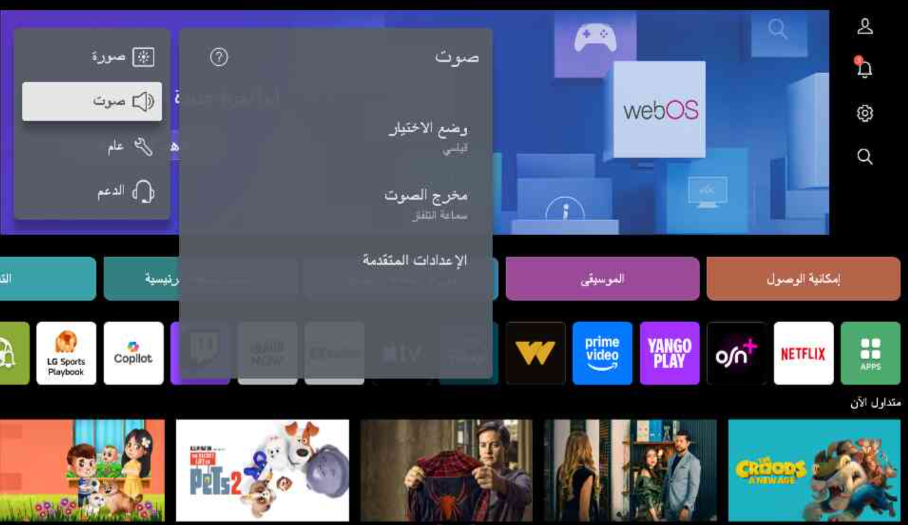
كل عناصر قسم الصوت
اقرأ للعميل
{{ selSndItem.script }}
{{ selSndItem.n }}
{{ selSndItem.title }}
شكل الزر على الشاشة
{{ sndCrop }}
هذا هو الزر كما يظهر للعميل على الشاشة — وجّهه للوصول إليه بالريموت ثم الضغط عليه.
وظيفة العنصر
{{ selSndItem.what }}
متى يستخدمه موظف خدمة العملاء
{{ selSndItem.when }}
قائمة وضع الصوت — كل الأوضاع المتاحة
من قسم «صوت» نضغط على «وضع الاختيار» فتفتح القائمة دي. الوضع المختار حاليًا عليه نقطة خضراء. اضغط على أي علامة لمعرفة وظيفة الوضع ومتى يُرشَّح للعميل.
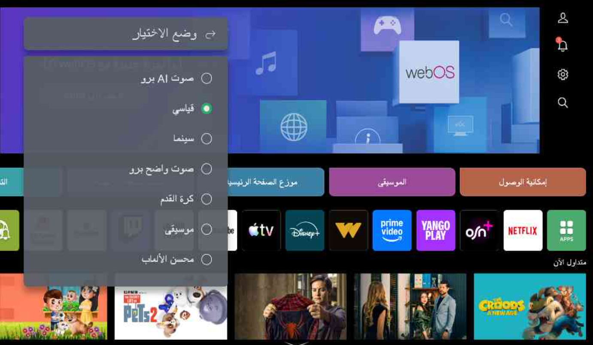
كل أوضاع الصوت
اقرأ للعميل
{{ selSmodeItem.script }}
{{ selSmodeItem.n }}
{{ selSmodeItem.title }}
شكل الخيار على الشاشة
{{ smodeCrop }}
هذا هو الخيار كما يظهر للعميل على الشاشة — وجّهه للوصول إليه بنفس الشكل والمكان.
وظيفة الوضع
{{ selSmodeItem.what }}
متى يستخدمه موظف خدمة العملاء
{{ selSmodeItem.when }}
قائمة مخرج الصوت — من أين يخرج الصوت
من قسم «صوت» نضغط على «مخرج الصوت» فتفتح القائمة دي. أعلى القائمة يظهر السماعة المحددة حاليًا. أغلب شكاوى «مفيش صوت» بعد توصيل ساوند بار أو سماعة بلوتوث سببها إن المخرج مضبوط غلط.
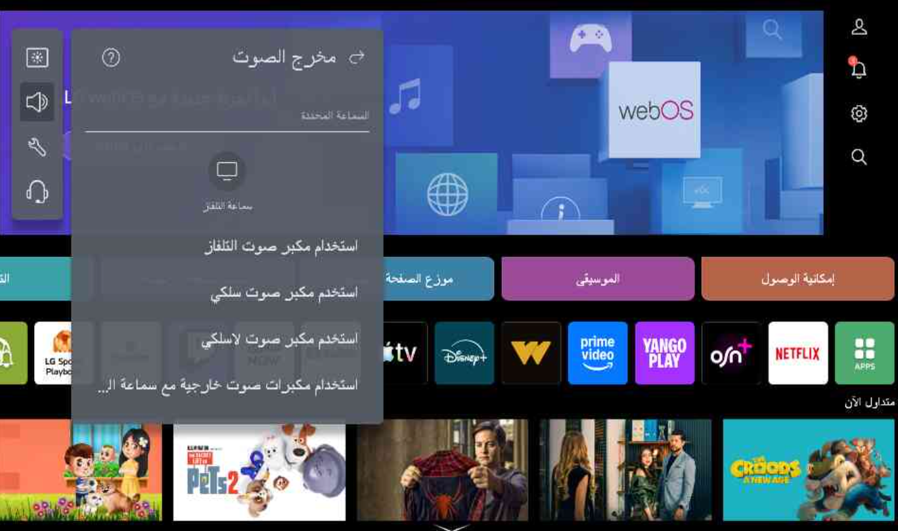
كل خيارات مخرج الصوت
اقرأ للعميل
{{ selSoutItem.script }}
{{ selSoutItem.n }}
{{ selSoutItem.title }}
شكل الخيار على الشاشة
{{ soutCrop }}
هذا هو الخيار كما يظهر للعميل على الشاشة — وجّهه للوصول إليه بنفس الشكل والمكان.
وظيفة الخيار
{{ selSoutItem.what }}
متى يستخدمه موظف خدمة العملاء
{{ selSoutItem.when }}
الإعدادات المتقدمة للصوت — الجزء الأول
من قسم «صوت» نضغط على «الإعدادات المتقدمة». هنا الاتزان والمعادل ونوع التركيب وضبط الصوت التلقائي. اضغط على أي علامة لمعرفة وظيفتها وما يُقال للعميل.
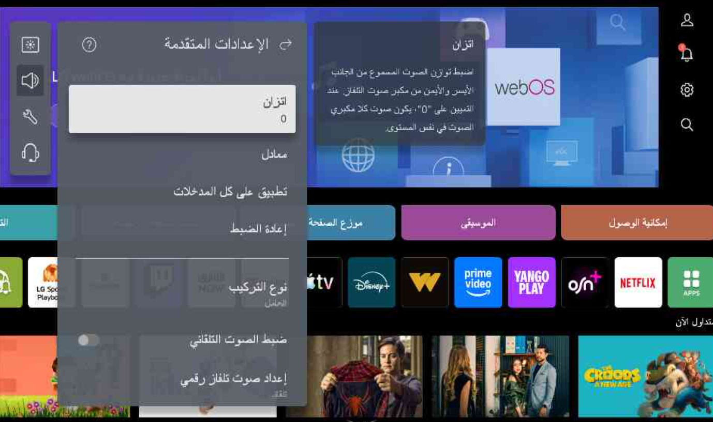
كل عناصر الجزء الأول
اقرأ للعميل
{{ selA1Item.script }}
{{ selA1Item.n }}
{{ selA1Item.title }}
شكل الخيار على الشاشة
{{ a1Crop }}
هذا هو الخيار كما يظهر للعميل على الشاشة — وجّهه للوصول إليه بنفس الشكل والمكان.
وظيفة الخيار
{{ selA1Item.what }}
متى يستخدمه موظف خدمة العملاء
{{ selA1Item.when }}
الإعدادات المتقدمة للصوت — الجزء الثاني
تكملة نفس القائمة بعد التمرير لأسفل: مزامنة الصوت مع الصورة، تهيئة صوت HDMI، مزامن صوت LG، إخراج الصوت الرقمي، ودعم eARC.
كل عناصر الجزء الثاني
اقرأ للعميل
{{ selA2Item.script }}
{{ selA2Item.n }}
{{ selA2Item.title }}
شكل الخيار على الشاشة
{{ a2Crop }}
هذا هو الخيار كما يظهر للعميل على الشاشة — وجّهه للوصول إليه بنفس الشكل والمكان.
وظيفة الخيار
{{ selA2Item.what }}
متى يستخدمه موظف خدمة العملاء
{{ selA2Item.when }}
قسم «عام» — إعدادات النظام والقنوات والشبكة
كل ما هو خارج الصورة والصوت موجود في قسم «عام»: خدمة AI، الإعدادات العائلية، القنوات، الشبكة، الأجهزة الخارجية، والنظام. شكاوى «الشاشة بتقفل لوحدها» و«الألوان مايلة للأصفر» غالبًا من الإعدادات العائلية.
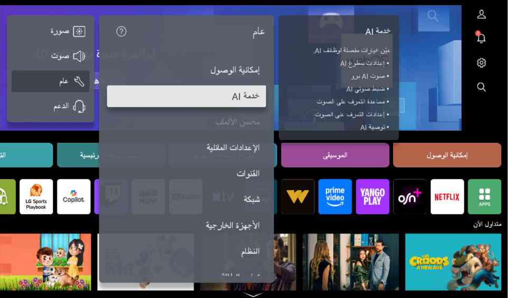
كل عناصر قسم عام
اقرأ للعميل
{{ selGenItem.script }}
{{ selGenItem.n }}
{{ selGenItem.title }}
شكل الخيار على الشاشة
{{ genCrop }}
هذا هو الخيار كما يظهر للعميل على الشاشة — وجّهه للوصول إليه بنفس الشكل والمكان.
وظيفة الخيار
{{ selGenItem.what }}
متى يستخدمه موظف خدمة العملاء
{{ selGenItem.when }}
قائمة «النظام» — اللغة والوقت والسلامة وإعادة الضبط
من «عام» نختار «النظام». هنا اللغة والموقع والوقت والمؤقت والسلامة وإعادة الضبط إلى الإعدادات المبدئية — آخر خطوة قبل تسجيل بلاغ في الشكاوى البرمجية.
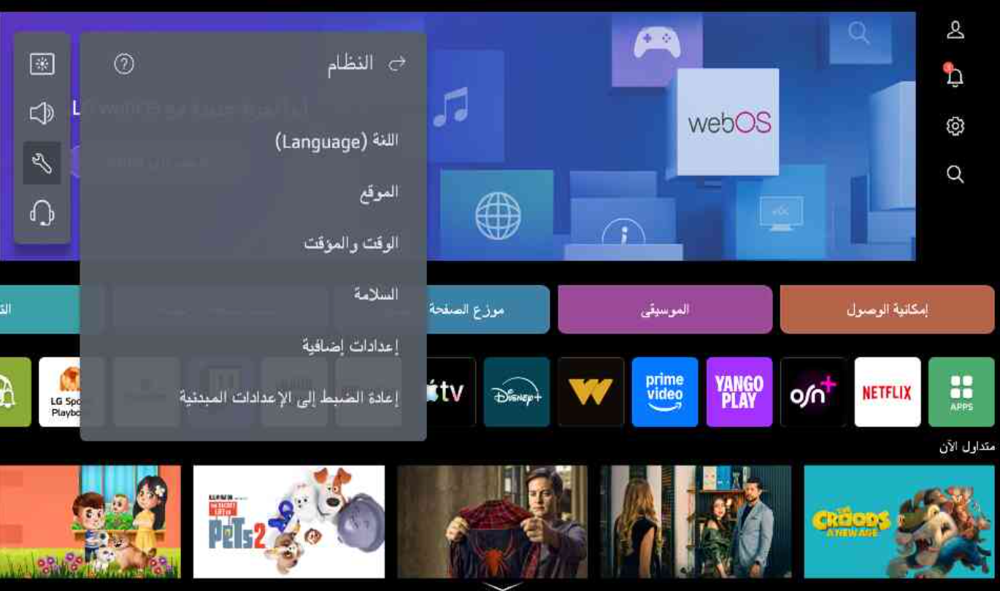
كل عناصر قائمة النظام
اقرأ للعميل
{{ selSysItem.script }}
{{ selSysItem.n }}
{{ selSysItem.title }}
شكل الخيار على الشاشة
{{ sysCrop }}
هذا هو الخيار كما يظهر للعميل على الشاشة — وجّهه للوصول إليه بنفس الشكل والمكان.
وظيفة الخيار
{{ selSysItem.what }}
متى يستخدمه موظف خدمة العملاء
{{ selSysItem.when }}
إعدادات إضافية — البدء السريع والإعلانات والمؤشر
من «النظام» نختار «إعدادات إضافية». أهم عنصر هنا: العروض الترويجية على شاشة التوقف — سبب شكوى «الشاشة بتعرض إعلانات لوحدها».
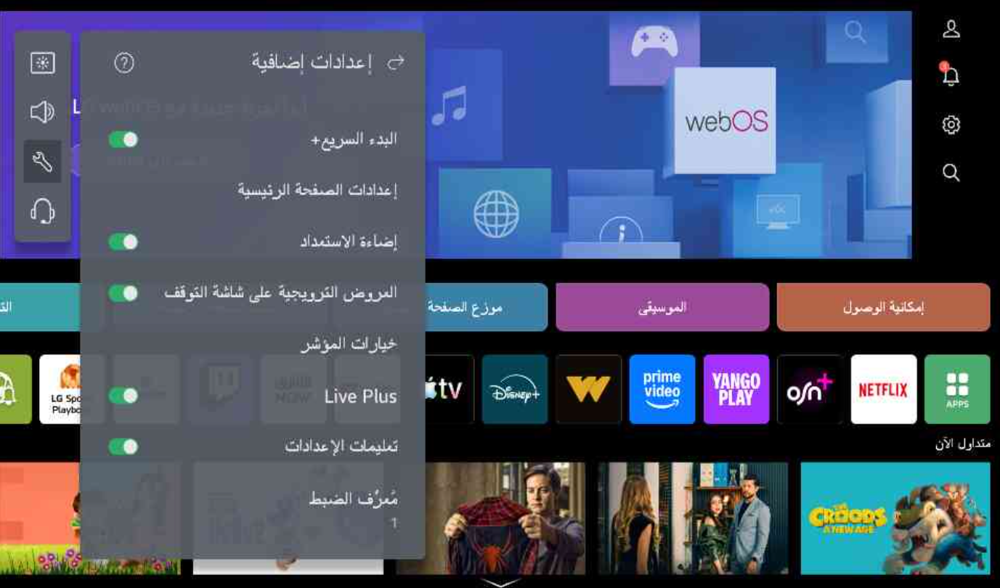
كل عناصر الإعدادات الإضافية
اقرأ للعميل
{{ selExItem.script }}
{{ selExItem.n }}
{{ selExItem.title }}
شكل الخيار على الشاشة
{{ exCrop }}
هذا هو الخيار كما يظهر للعميل على الشاشة — وجّهه للوصول إليه بنفس الشكل والمكان.
وظيفة الخيار
{{ selExItem.what }}
متى يستخدمه موظف خدمة العملاء
{{ selExItem.when }}
قسم «الدعم» — التحديث والتشخيص الذاتي
قسم الدعم فيه أهم أدوات الفحص: تحديث البرامج، والتشخيص الذاتي للشاشة والصوت اللي بيفرّق بين عيب الجهاز وعيب المصدر قبل تسجيل أي بلاغ.
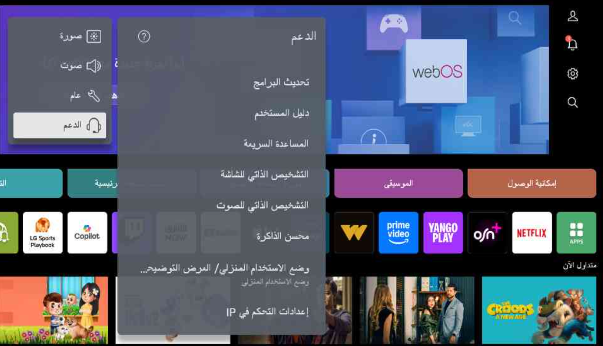
كل عناصر قسم الدعم
اقرأ للعميل
{{ selSupItem.script }}
{{ selSupItem.n }}
{{ selSupItem.title }}
شكل الخيار على الشاشة
{{ supCrop }}
هذا هو الخيار كما يظهر للعميل على الشاشة — وجّهه للوصول إليه بنفس الشكل والمكان.
وظيفة الخيار
{{ selSupItem.what }}
متى يستخدمه موظف خدمة العملاء
{{ selSupItem.when }}
قسم «الدعم» — تكملة القائمة
نفس القائمة بعد التمرير لأسفل — فيها معلومات التلفاز (رقم الموديل والسيريال المطلوبين في البلاغ) وخصوصية والشروط.
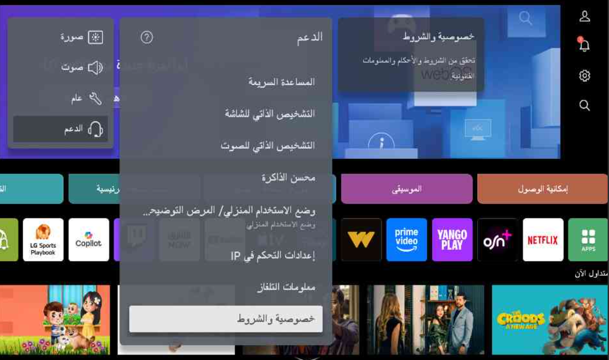
عناصر تكملة قسم الدعم
اقرأ للعميل
{{ selSup2Item.script }}
{{ selSup2Item.n }}
{{ selSup2Item.title }}
شكل الخيار على الشاشة
{{ sup2Crop }}
هذا هو الخيار كما يظهر للعميل على الشاشة — وجّهه للوصول إليه بنفس الشكل والمكان.
وظيفة الخيار
{{ selSup2Item.what }}
متى يستخدمه موظف خدمة العملاء
{{ selSup2Item.when }}
اقرأ للعميل — الرسوم
«الصيانة داخل فترة الضمان مجانية تمامًا. ولو ظهر إن السبب مش عطل فني في الجهاز، أو إن العطل خارج نطاق الضمان، بتكون في تكلفة زيارة ومعاينة ١٨٢ جنيه لأول زيارة، وأي زيارة بعدها ٣٠٠ جنيه — وتكلفة الصيانة نفسها بتتحدد بعد ما الفني يعاين الجهاز، وهتُعرض على حضرتك للموافقة قبل أي إصلاح.»